Product overview first — then technical reference (specifications, geometry, ordering detail). Page numbers are indicative for one sheet per block in print.
Steel bar grating supplier — welded and press-locked construction.
Platforms, walkways, trenches, access — specified to drawing and quotation.
Carbon steel, stainless, hot-dip galvanizing and other finishes — as quoted.
Documentation and fabrication aligned to the authorised release for your order.
Applications
Pick your world — we match the grating
Quick orientation for buyers. Same welded / press-locked steel families across sectors; mesh, finish, and loads are settled on your drawing + RFQ — not on this overview page.
Platforms
Stairs
Walkways
Trenches
Covers
Oil & gas
Pipe racks · tank farms · maintenance decks
Power
Boiler / turbine halls · outdoor yards
Data centers
Plant yards · roof access · service routes
Infrastructure
Bridges · stations · drainage lines
Water
Channels · galleries · chemical areas
Photos: Unsplash · Need pricing? Jump to Selection guide & RFQ. Longer sector notes: technical appendix §X.
Outdoor and aggressive industrial atmospheres on carbon grating: long-life zinc barrier.
Walkways, stair treads, and trench covers in wet or variable weather.
Selection note
If the job names a galvanizing practice, write it on the RFQ; execution and venting detail follow the quoted line and approved drawings.
Specifier paint systems, duplex over galvanizing, or colour coding for safety zones.
Controlled indoor environments where a defined organic coating is preferred over bare steel.
Selection note
Send system name, primer/topcoat, DFT, and substrate (black steel vs galvanized); shop vs site touch-up must match the quotation.
Photos illustrative. Long-form material and finish wording: technical appendix §9–§10 — plus your Wiberg quotation line.
Reference tables
Specification & technical data
Internal reference library: catalog 1 (extract: _extraction_report.txt). For PRC supply aligned with the unified industry document YB/T 4001.1—2019 (*Steel bar grating and matching parts — Part 1*), use the marking rules and walkway mesh limits below. Binding numbers for your order still come from the Wiberg quotation, approved drawings, and matching technical release (§13 load data — not reproduced here).
YB/T 4001.1—2019 · model & marking (§5)
Segment
Meaning
Leading G
Steel grating product
Width × thickness (before first “/”)
Bearing (load) flat bar h × t, mm
First “/” group
Bearing bar centre spacing (mm)
Second “/” group
Cross bar centre spacing (mm)
W / omit
Pressure (fusion) welded grating — W may be omitted
P
Press-locked (压锁) grating
F / omit
Rectangular bearing bar — F may be omitted
I / S
I-section bearing bar / serrated bearing bar
G / omit
Hot-dip galvanized — G may be omitted when galvanized
U
No surface treatment on bearing bars
Standard marking example (clause 5.2): bearing bar 40 × 5 mm, bearing pitch 30 mm c/c, cross pitch 100 mm c/c, welded, untreated → G405/30/100U. Other combinations follow the same pattern; verify on the order.
Mesh & panel geometry
Parameter
Notation
Binding source
Bearing bar size
h × t (mm)
Quotation + drawing
Bearing bar pitch
s₁ (mm, c/c)
Schedule / §8
Cross bar pitch
s₂ (mm, c/c)
Schedule / §8 — give with s₁
Span direction
∥ bearing bars
Drawing (§4)
Panel overall
L × W (mm)
Drawing; standard sizes only on released schedule
Top surface
Plain / serrated
Order / §8
Construction type
Welded (W) / press-locked (P)
§3, §6, quotation; YB/T 4001.1 §4–§5 when adopted
Walkway / platform mesh (YB/T 4001.1 §7.1.1.3)
Clear opening
When this standard applies: bearing clear spacing < 35 mm; cross clear spacing ≤ 150 mm — confirm against contract
Cut-outs, banding
Net dims
Drawing; feasibility §8
European-style RFQs often write 30×5 for h×t and 32/100 for s₁/s₂; China standard catalogue marks use the G…/…/… form above — same job must read back to one agreed descriptor on the quotation.
Materials & finishes
Item
Typical field on order
Binding source
Carbon steel
Grade requirement
Quotation + mill documents (§9)
Stainless steel
Grade (e.g. 304 / 316 family)
Quotation — not generic catalogue choice (§9)
Hot-dip galvanizing
Practice / class if named
Quotation + project docs (§10)
Paint / duplex
System, DFT, substrate
Written spec on order (§10)
Untreated carbon
—
Only when explicitly ordered; rusts in humid air (§10)
Structural & workshop data
Data type
Where it is defined
Load–span tables, deflection assumptions
§13 — use only the revision that matches your authorised release and quotation line
Supports, bearing length, edge fixity
Must match §13 assumptions or be recalculated for the order
Fabrication tolerances, marking
§14 + contract
Installation, fixings overview
§15–§16 + drawing
Designation string / ordering descriptors
§11 + quotation; YB/T 4001.1 §5 when contract cites it
How you define loads / deflection — your project wording, not ours on this sheet
Qty, where it ships, dates, and any mandatory paperwork
3 · Loads or steelwork not frozen
Send a clearly marked assumption pack: trial span, width, load class words, deflection ask.
Request optional mesh ideas against those assumptions; re-quote when supports are fixed.
Say what you do not know yet — avoids silent guesses.
Earlier RFQ with honest gaps beats a late change after planning starts.
Appendix
Technical reference
The following sheets retain the full numbered catalog text: scope, terminology, construction detail, materials, finishes, designation, design rules, load tables, fabrication, installation, accessories, and commercial/ordering clauses. Use the product pages in front for buyer-facing summaries.
2
Wiberg at a glance
Supply scope and working method for steel grating and related items where quoted.
Illustrative visuals only — not a project-specific design; authorised release and quotation govern.
Context (schematic)Typical walkway / platform context for industrial grating supply.DetailOpen-grid mesh — drainage and clear openings depend on pitch and specification.Process diagram
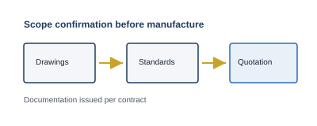
Drawings and cited standards feed scope confirmation and contract documents.
What we supply
Steel grating: welded and press-locked bar grating
Grating-related access where quoted (e.g. stair treads, trench covers)
FRP grating only if it appears on the quotation
Who buys
Contractors, distributors, project suppliers needing defined specs, controlled fabrication, and order-aligned documentation
Typical use
Working platforms, maintenance walkways, open-grid flooring in process plants, trench/channel covers
How we work
Drawings and cited standards; scope confirmed before manufacture; documents per contract
Not offered
General steel distribution — supply is limited to grating systems and their fixings
3
Product scope & limitations
Products covered, variants, exclusions, and related catalogues.
Schematic comparison — construction principles, not a fabrication drawing.
Product familiesWelded vs press-locked within steel bar grating scope.Variants (detail)Heavy-duty and close-mesh concepts — subject to quotation.Out of scope
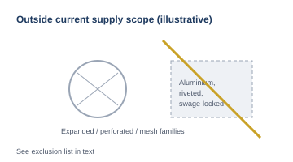
Items listed in text as not supplied — illustrative icons only.
1. Products in this catalog
Welded steel bar grating — bearing and cross bars joined by forge (pressure) welding at crossings
Press-locked steel bar grating — cross bars mechanically locked into bearing bars (no fusion weld at each crossing)
Accessories and fixings (clips, banding, retention, edge parts): Section 16.
2. Variants (subject to quotation)
Heavy-duty — larger bearing section and/or tighter spacing for higher load or shorter span
Close mesh — smaller clear opening between bearing bars (cross bars as specified)
Ball-proof — grid openings limited per contract criterion/standard
Custom fabrication — cut-to-size, cut-outs, banding layouts on the same grating types, per drawing/quotation
3. Outside current scope
Wiberg supplies steel grating (welded and press-locked) and, where quoted, FRP as a separate line.
Enquiries focused on these items are outside this catalog.
4. Related lines
X
Applications
Where welded and press-locked steel bar grating is commonly specified — for orientation only. Availability, geometry, loads, materials, and finishes are fixed in the quotation and approved drawings.
Oil & Gas
Onshore process areas, pipe racks, tank farms, LNG-related yards, and maintenance access around rotating equipment where open-grid flooring is specified.
Typical use of grating
Elevated walkways and working platforms along process lines
Access over pipe racks and valve stations
Trench and sump covers in paved or contained areas
Stair treads and landings where covered in the order
Why grating is used
Drainage and reduced ponding in outdoor and wash-down areas
Ventilation and visibility through the walking surface where required
Modular panels for maintenance access; serrated options for wet or contaminated steps
Hot-dip galvanized or stainless finishes matched to environment — per specification and quotation
Power plants
Thermal, combined-cycle, biomass, and similar facilities with elevated maintenance routes, balance-of-plant access, and outdoor equipment yards.
Typical use of grating
Turbine / boiler hall mezzanines and maintenance walkways
Cooling water channels, pump areas, and auxiliary trenches
Coal / fuel handling galleries and transfer points — where grating is specified
Switchyard or outdoor transformer access platforms where quoted
Why grating is used
Light, open structure for long spans with defined load cases
Drainage in wet areas; reduced debris accumulation versus solid plates in some layouts
Consistent product for repeat bay layouts; heavy-duty variants for high wheel or foot traffic when specified
Finishes (galvanizing, paint systems, stainless) aligned to environment — per project documents
Data centers
Critical-facility sites with exterior plant compounds, generator yards, cooling plant access, and internal service mezzanines where open-grid access floors are specified (not a substitute for raised-floor specifications unless grating is on the quotation).
Typical use of grating
Roof-level plant access and maintenance walkways
Generator / chiller compounds: platforms and trench covers
Service corridors and cable gallery walkways where open grid is required
External stairs and landings where treads are quoted as grating
Why grating is used
Drainage and airflow in outdoor plant areas
Defined slip resistance with serrated bearing bars where specified
Galvanized carbon or stainless options for coastal or de-icing exposure — per grade on quotation
Repeatable panel geometry for phased construction — subject to drawing approval
Infrastructure
Transport, utilities, and municipal works: stations, bridges, pump rooms, and linear drainage along roads or rail where steel grating is specified.
Typical use of grating
Maintenance walkways on bridges, viaducts, and station canopies
Roadside and platform drainage trenches and gully covers
Utility tunnels and access pits with removable covers
Public-realm installations where ball-proof or anti-slip criteria apply — per contract
Why grating is used
High drainage capacity with visible channel below
Standardized panels for replacement and inspection access
Structural efficiency for pedestrian or maintenance loads when engineered to project assumptions
Durable coatings (e.g. HDG) for outdoor exposure — per specification
Water treatment
Potable, wastewater, and industrial water plants with open channels, clarifiers, chemical dosing areas, and outdoor galleries subject to splash and humidity.
Typical use of grating
Walkways over tanks, channels, and process basins
Chemical storage and dosing platforms
Trench covers in slab-on-grade areas
Stair treads in wet environments — often serrated; stainless where specified
Why grating is used
Drainage of wash-down and spill paths; reduced standing water on walking lines
Stainless grades available for chloride or chemical splash — as quoted
Serrated surfaces for slip resistance in continuously wet areas
Open grid allows visual checks and access to instrumentation below — where layouts permit
4
How to read this catalog
Rules for panels, spans, drawings, and precedence versus the order.
Engineering diagrams — generic orientation; schedules must match the order.
Span direction
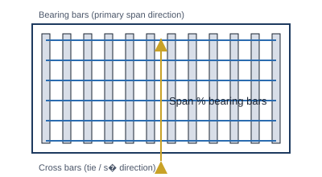
Span direction is parallel to bearing bars (load path to supports).Bearing pitch s₁s₁ — centre-to-centre spacing of bearing bars (mm).Cross pitch s₂s₂ — centre-to-centre spacing of cross bars along the bearing-bar direction (mm).
Catalog scope
Describes welded and press-locked steel bar grating: geometry, designation, engineering use.
Figures and tables
Panel size and span
Length × width = overall rectangle (mm)
Span direction = direction bearing bars transfer load to supports (not always the long side)
Schedules/drawings must show which dimension is parallel to bearing bars
Bearing bars and supports
Bearing bars ∥ one panel edge; cross bars ⊥
Supports normally under the bearing-bar direction unless structurally accepted otherwise
Minimum bearing, spacing, and edge support must match the load table assumptions (Section 13)
Standard vs custom panels
Standard — nominal sizes on the current Wiberg schedule for quotation (not a guarantee of stock everywhere)
Custom — cut, banded, notched, or combined per drawing within offered limits
Availability and lead time: per order
Pitches and dimensions
s₁, s₂ — centre-to-centre (mm) unless a note gives clear opening or net dimension
Bearing-bar size — depth × thickness (mm) as ordered
Masses, areas, prices — per geometry, finish, and tolerance class on the quotation
Precedence
5
Terminology & symbols
Definitions and figure symbols for schedules and drawings.
Visual glossary — use the table for binding definitions.
Terms on grid
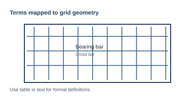
Bearing vs cross bars on a rectangular mesh.Symbols
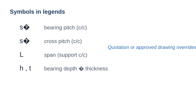
Figure symbols; quotation or drawing overrides conflicts.Clear opening
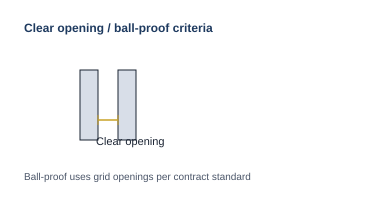
Clear opening and ball-proof relate to grid openings per order.
Unit with length, width, bearing-bar direction, pitches, edge treatment
Banding
Edge flat on perimeter
Cut-out
Opening; dim’d on drawings vs bearing bars
Clear opening
Net gap or inscribed opening (debris, drainage, ball-proof if specified)
Plain surface
Smooth top of bearing bars
Serrated surface
Notched top for slip resistance
Span direction
∥ bearing bars; load to supports along this axis
Symbols in figures
Symbols — s₁, s₂, L (span c/c supports), t (bearing thickness), h (bearing depth): per figure legends. Quotation or approved drawing overrides a conflicting symbol.
6
Construction types
Welded vs press-locked manufacture, use, and selection basis.
Schematic product views, crossing details, and principles — not shop drawings.
Welded steel grating
Product (schematic)Typical welded steel bar grating — plan view; weld nodules at crossings.Crossing detailFusion / pressure weld at bearing–cross intersection.Principle diagramRigid joints and direct load transfer — verify on project.
Press-locked steel grating
Product (schematic)Press-locked mesh — smooth appearance at crossings.Crossing detailMechanical interlock — no fusion weld at each crossing.Principle diagramInterlocked grid — capacity/deflection still require project checks.
1. Welded steel grating
Manufacturing
Crossings: heat + pressure (welded grid)
Cross bars: usually round or twisted steel
Bearing bars: steel flats or other agreed steel section within quoted range
Characteristics
Rigid joints; load sharing; visible welds at crossings
Suited to industrial duty, higher traffic, layouts where stiffness and direct load paths matter
Typical use
Plant platforms, process flooring, maintenance walkways, heavy bays; trench/pit covers where grid is welded steel
2. Press-locked steel grating
Manufacturing
Mechanical lock (e.g. slotted/cold-formed interlock); no fusion weld at each crossing
Edge finish per order
Characteristics
Smooth at crossings; stable pitch/bar sizes
Often where appearance/flatness at crossings matters — capacity/deflection still need project checks
Typical use
Walkways/platforms needing a cleaner grid; architecturally sensitive industrial work only after engineering sign-off (loads, spans, supports)
3. Choosing
8
Standard product range — geometry
Nominal dimensions, pitches, panels, and variants tied to quotation and drawings.
Dimensioning examples — mark bearing-bar direction on every schedule.
Panel dimensions
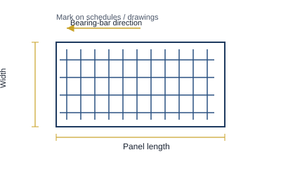
Length, width, and dimension parallel to bearing bars (span direction).Pitches s₁ & s₂
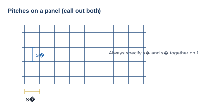
Always specify s₁ and s₂ together on RFQs.Custom fabricationBanding, cut-outs, and non-standard layouts — feasibility per quotation.
Bearing bar (h × t, mm) — as offered; deeper/thicker adds stiffness — project-specific
s₁ — tighter pitch → more capacity per width, smaller clear opening — state on schedules
s₂ — affects stability, twist, fixing layout — always give s₁ and s₂ together
Plain / serrated — plain: friction depends on environment/finish; serrated: slip resistance per released detail or “serrated per supplier standard” on order
Panels — L × W (mm), bearing-bar direction marked; standard sizes only on released schedule, else made-to-order
Cut-to-size, cut-outs, banding — net dimensions; squareness per works standard; cut-outs usually to next bearing bar unless agreed; banding per offer; non-standard layouts → feasibility + quotation
Variants (heavy-duty, close-mesh, ball-proof)
Heavy-duty, close-mesh, ball-proof: same construction types; opening limits/rules in the order vs project criteria.
9
Materials
Carbon and stainless steel; selection factors; binding documentation.
Material illustrations — grades and certificates follow contract and mill documents.
Carbon steelStructural carbon — typically coated or galvanized for exposure.StainlessAustenitic types as quoted; normally uncoated.Environment flow
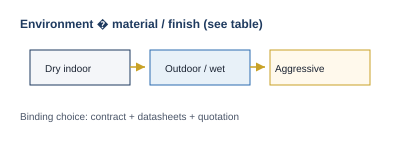
Route environment to finish — see selection table in text.
Carbon steel
Default for welded/press-locked where corrosion is moderate or managed (galvanizing/paint).
Typical use
Plants, workshops, utilities
Grades: on quotation and mill docs when ordered.
Stainless steel
Where oxidation, chemical splash, chlorides, or hygiene exceed practical coated carbon performance.
Typical use
Water/chemical treatment (splash/humidity)
Coastal/de-icing (grade per project)
Food/pharma only with defined project standards/finishes
Austenitic types (e.g. 304/316) as quoted — grade selection is not generic catalogue matter.
Zinc on steel (not to scale); vent/drain per shop practice on order.Duplex stackDuplex only when a written organic system is specified.
Hot-dip galvanizing
Fabrication then zinc dip: barrier + sacrificial protection at small bare areas. Venting/drainage for hollow/lapped details: shop practice on order. Appearance (brightness, spangle): bath/chemistry — not a standalone performance spec.
Typical use
Outdoor platforms, walkways, drainage covers
Paint and coating systems
Indoors or where colour/chemical resistance specified. Duplex (galvanizing + organic): only with written system spec. Performance: prep, primer, intermediates, topcoat per spec. Field welding damages organic coats — repair per project. Topcoat slip resistance: separate from structural design — state test/class if required.
Untreated carbon steel
Mill or blasted, no zinc/paint — customer protects soon or exposure is strictly temporary.
Stainless steel
Normally uncoated. Carbon-steel tool marks or deposits can stain — cleaning per project.
11
Designation & ordering descriptors
Minimum RFQ content, example strings, and precedence over informal naming.
Descriptor sketches — examples in text remain non-binding until quoted.
Drawing callout
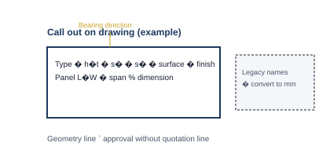
Neutral layout for type, pitches, finish, panel, span direction.RFQ blocks
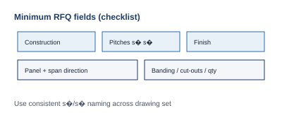
Minimum RFQ fields as checklist-style diagram.Example formatsString format examples only — quotation line governs.
Minimum RFQ
Construction: welded or press-locked
Bearing bar h × t (mm)
s₁, s₂ (mm c/c)
Plain or serrated
Finish
Panel L × W (mm) + which dimension is ∥ bearing bars
Banding, cut-outs, quantities as relevant
Example descriptor (format only)
Welded steel grating | bearing bar 32×5 mm | s₁ = 33 mm | s₂ = 100 mm | plain | hot-dip galvanized | panel 995×996 mm | span ∥ 995 mm
Legacy / inch names
Must be converted to mm and checked vs Wiberg offered combinations. No code compliance or structural equivalence from naming alone.
Example callouts
Press-locked | 30×3 mm | s₁ = 34 mm | s₂ = 50 mm | serrated | HDG per [spec] | 1200×1000 mm | span ∥ 1200 mm | banding 30×4 mm
Welded | 40×5 mm | s₁ = 34 mm | s₂ = 100 mm | plain | HDG | 1500×1000 mm | span ∥ 1500 mm | cut-out per dwg SK-102
Welded | 30×3 mm | s₁ = 38 mm | s₂ = 100 mm | plain | stainless 316L per quote | 800×600 mm | span ∥ 800 mm
Formal Wiberg codes: revision notes / price lists when issued. Quotation line + approved drawings beat these examples.
12
Design considerations
Strength, deflection, inputs, and when project engineering is required.
Structural models are indicative — engineer of record defines actions and limits.
Span model
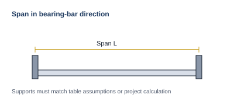
Span in bearing-bar direction between designed supports.Load typesDeclare load type, combinations, and deflection criteria for checks.Review outcome
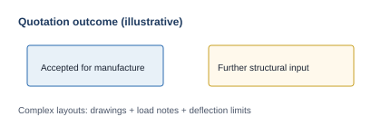
Quotation states manufacture acceptance vs further structural input.
Basis
Grating must meet strength and deflection per project requirements.
Loads — from specifier/contract (magnitude, type, combinations)
Span — unsupported distance in bearing-bar direction between designed supports (not nominal bay alone)
Supports — bearing length, restraint, continuity must match table assumptions or project checks
Without defined loads/supports — quote geometry and mass only, not structural adequacy
Minimum inputs
Load type (e.g. kN/m² uniform, line/point; static vs moving if relevant)
Span (mm) in bearing-bar direction; continuous spans or cantilevers noted
Support model (simple vs continuous, min bearing, perimeter support)
Unusual spans, concentrated loads (feet, wheels, plant), heavy traffic, heavy-duty actions, large cut-outs, non-standard supports → drawings, load notes, deflection limits. Quotation states accepted for manufacture vs needs further structural input (buyer / engineer of record).
13
Load tables & span data
Released data only; assumptions; reading sequence; non-standard conditions.
How to read released tables — still subject to revision and quotation.
Reading sequence
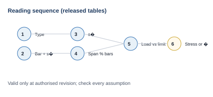
Step order: type → bar & s₁ → s₂ → span → load check → governing criterion.Assumptions
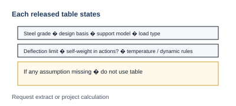
Every assumption on the release must be present before use.Non-standard
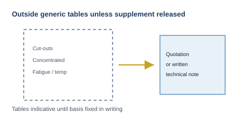
Indicative tables until quotation or written technical note fixes basis.
Scope
Applies to released, maintained Wiberg data for welded and press-locked steel bar grating (incl. released variants: heavy-duty, close-mesh, ball-proof where a separate table/footnote exists)
Serrated detail, cut-outs, banding, concentrated loads, impact, fatigue, temperature, non-simple supports — outside generic tables unless a released supplement applies. Use tables as indicative until quotation or written technical note (referenced to drawings/loads) fixes the basis.
14
Fabrication, tolerances & marking
Panel execution, tolerances, identification, and documentation on the order.
Shop concepts — numerical limits on the order / works standard.
Fabrication
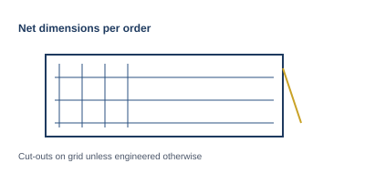
Net sizes, bearing-bar direction, cut-outs on grid unless engineered otherwise.TolerancesNominal vs net and galvanizing effects — see order documentation.Marking & docs
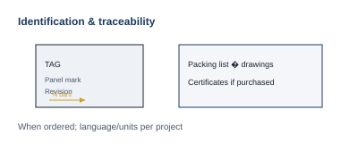
Tags, orientation arrow when ordered; lists ↔ drawings.
Fabrication
Cut to ordered net L × W; bearing-bar direction as drawn
Cut-outs per approved drawings; usually on bearing-bar grid unless engineered otherwise
Large voids — may need local stiffening or extended banding
Perimeter banding — per quotation
Tolerances
Subject to manufacturing tolerance and processing (incl. galvanizing)
Nominal vs net and inspection rules: works standard on the order — not this overview
Final limits: order + inspection plan
Marking
Stencil/tag/label: project ref, panel mark, revision, bearing-bar arrow when ordered